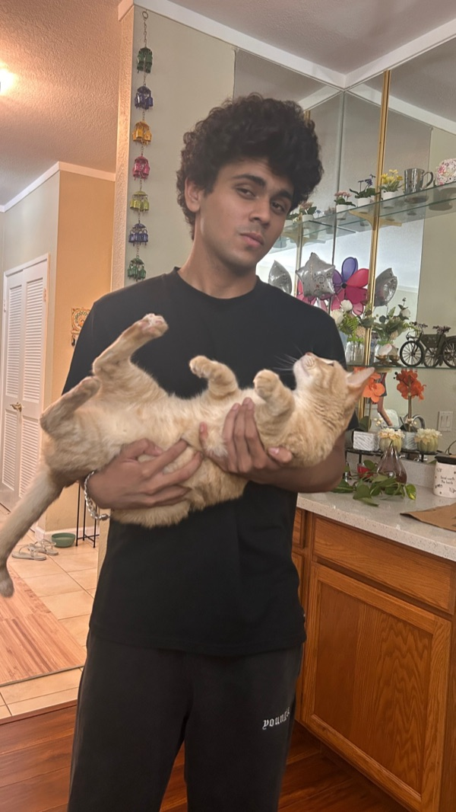

Aryen Palkar

I am a Data Science student at UC San Diego interested in the practical side of machine learning: getting models trained, evaluated, deployed, and measured in the real world.
Lately I have been focused on AI/ML infrastructure, computer vision, and LLM evaluation. I like projects where the work does not stop at a notebook: there should be an API, a repeatable evaluation path, and some honest measurement of whether the system is actually better.
This site is my DSC 106 portfolio. It uses semantic HTML and responsive CSS so the same content remains readable from a wide desktop window down to a phone.